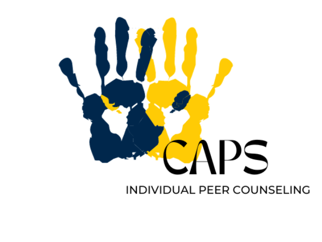
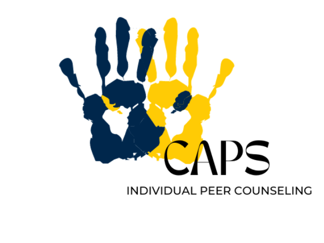

University Health & Counseling (UHC) supports the health and well-being of the campus community. We are inspired to help students realize their potential, cope with the stresses of life, work productively, and connect meaningfully with others. UHC is made up of Counseling and Psychological Services (CAPS), which offers counseling services, and University Health Service (UHS), which offers medical services. This website is about CAPS. For information about UHS, please visit the UHS website. CAPS is committed to creating an environment based on our values of multicultural, multi-disciplinary and multi-theoretical practices that allow our diverse student body to access care, receive high quality services and take positive pathways to mental health. We are happy to offer both in-person and virtual services. Our Front Desk (Michigan Union 4th Floor) is open and ready to help support you -- staff members are available throughout the day to assist you with your needs to answer questions, and get you to the right place. We can be reached by phone at: (734) 764-8312. CAPS has a limited number of private spaces available for students to connect with their counselor via telecounseling. Please contact the front desk for more information on those private spaces. Please Note: During high-demand periods, CAPS will be unable to accommodate class-related interviews and/or projects. Many students are able to find the information they need within our website and our annual reports. The CAPS office is unable to participate in scavenger hunts for students due to maintaining the confidentiality of our clients. However, you are welcome to direct students to the wellness zone, which has a separate entrance adjacent to CAPS. If you have any questions, please feel free to contact us.
Let's Talk
“Let's Talk” is a free program that supports students starting their mental health journeys. It provides casual meetings with counselors during specific drop-in times for initial support and advice.

Individual Peer Counselingk
Individual Peer Counseling (IPC) is designed to offer a new way to meet the needs of students across the University of Michigan. We are here to support student mental health and offer students a place to vent.Read More
A Brief Note of Support Regarding the Violence in Israel and Gaza
CAPS extends its support to all our students who are being impacted by the current violence in Israel and Gaza. We recognize the understandable grief, fear and anger that many of our students may be experiencing right now, especially our students who are Israeli, Palestinian, or have ties to or loved ones in those regions. We encourage all of you to take care of and be compassionate with yourselves and each other; it is in times like these, that we can come together as a community, and in fact, we need to.
Self-Care For Incidents Of Campus Climate Concerns
When faced with social injustices and bias incidents, it is extremely difficult to cope and know what to do. Feeling overwhelmed with the current socio-political state, experiencing discrimination, or being impacted by contentious people or policies increases stress which remains correlated to negative mental health outcomes. During these times, it remains imperative that we take care of ourselves, take care of loved ones, and take care of our campus community. We all have the power to spread kindness, celebrate diversity and inclusion, and promote social justice.
Office Hours
Monday - Thursday: 8am - 6pm
Friday: 8am - 5pm
Saturday & Sunday: Closed
Urgent/Crisis Support at CAPS:
Monday - Friday from 10am - 4:30pm
After Hours 24/7 SupportContact
Phone: 734-764-8312 (24hrs)
Email: caps-uofm@umich.edu
Michigan Union
530 South State Street
Suite 4079
Ann Arbor, MI 48109